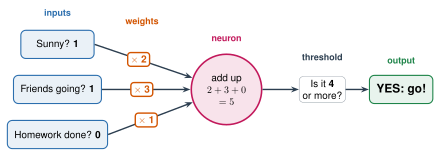

2.4 - The Artificial Neuron
A real neuron takes in signals, adds them up, and fires if the total is big enough.
In 1943, two scientists, Warren McCulloch and Walter Pitts, wrote this idea as math. In 1958, Frank Rosenblatt built a machine from it. It was called the perceptron. (The 1958 newspaper story in Lesson 1.4 was about this machine.)
That simple idea is the building block of every neural network today. Today, you’ll build one by hand.
Today’s Plan (40 minutes)
- 🔥 Warm Up Fighter or Wizard? 7 min
- 👥 Learn Together One neuron, then a network 13 min
- 🛠️ Try It Find the weights 14 min
- 💬 Talk About It Who picks the weights? 6 min
- 📥 input: a number that goes into a neuron
- ⚖️ weight: a number that says how much an input matters
- 🚦 threshold: the number the total must be more than for the neuron to fire
- 🔵 perceptron: the first artificial neuron that could learn (1958)
- 🧱 layer: a row of neurons in a neural network. Each layer sends its answers to the next one
Printable lesson sheet - the sheet you write on today.
Creature cards: print one set for the class.
🔥 Warm Up
These cards are for made-up creatures. Each card shows two numbers, as stars: Strength (how hard it hits) and Magic.
| Card | Strength | Magic |
|---|---|---|
| Krellis | ★★★★☆ (4) | ★★☆☆☆ (2) |
| Lullom | ★★☆☆☆ (2) | ★★★★☆ (4) |
One is a Fighter. One is a Wizard. Which is which? Tell a partner why.
Krellis is the Fighter: more Strength than Magic. Lullom is the Wizard: more Magic than Strength.
You used a rule in your head: compare the two numbers. Today, you’ll build a neuron that uses a rule like that.
👥 Learn Together
2.4.1 - Multiply, Add, Compare
An artificial neuron does three things:

- Multiply each input by its weight.
- Add them up.
- Compare the total with the threshold. If the total is more than the threshold, the neuron fires: Fighter. If not: Wizard.
\[\text{total} = (\text{Strength} \times \text{Strength weight}) + (\text{Magic} \times \text{Magic weight})\]
A weight can be negative. Here the Magic weight is \(-1\). It says: more Magic makes me LESS likely to say Fighter.
| Real neuron | Artificial neuron |
|---|---|
| Dendrites take signals in | Inputs |
| Strong or weak synapses | Weights |
| The cell body adds up the signals | Add up input × weight |
| Fires only if the total is big enough | Fires only if the total is more than the threshold |
An artificial neuron is only multiply, add, compare. That’s all. A neural network is many of these, connected together.
2.4.2 - From One Neuron to a Network
One neuron makes one small decision. A neural network connects many neurons. They’re arranged in rows called layers.
![A small neural network. On the left, two inputs: Strength 4 and Magic 2. In the middle, a column of three neurons. On the right, two neurons: Fighter and Wizard. Lines connect every input to every middle neuron, and every middle neuron to both right neurons. The top middle neuron's two lines are highlighted with weights times 1 and times minus 1. It's labeled: one neuron, like the one above: multiply, add, compare. A note says each line is a weight. Labels under the columns: input layer, the numbers go in. Hidden layer, its answers go to the next layer. Output layer, one neuron for each answer.](../../images/Unit_2/2.4_network.svg)
- The input layer holds the numbers that go in. Here, they’re the two numbers from a card.
- Every neuron in the hidden layer gets every input. Each one multiplies, adds, and compares, like the neuron above. Each one has its own weights. Its answer isn’t “Fighter” or “Wizard”. Its answer goes to the next layer as an input.
- The output layer gives the answer. There’s one neuron for each possible answer. The one with the biggest total wins.
Every line is a weight. Count them: \(2 \times 3 + 3 \times 2 = 12\) weights. The chatbots you use have billions of weights and many hidden layers.
You see the numbers that go in and the answer that comes out. You don’t see what the middle neurons decide. Nobody tells them what to look for, either. They find it while the network learns. In Lesson 2.5, the class becomes a network and watches this happen.
🛠️ Try It
2.4.3 - Find the Weights
The tool below is the class’s neuron. Its numbers are wrong. Your job is to fix them. Your teacher puts it on the screen.
- The neuron starts with Strength weight 1, Magic weight 1, and threshold 5.
- Each group gets one or two creature cards. Keep the type folded under.
- Calculate the total for your card. Is it more than the threshold? Say “Fighter” or “Wizard” out loud. Then unfold the card. Right or wrong?
- Check the tool. It shows all 6 cards, and how many are right.
- As a class, change one number in the tool. Look at the wrong cards first. Should a weight go up or down? Then every group tests its card again.
- Keep going until all 6 cards are right. Write your weights on your sheet.
Change a number and watch the line move.
| Card | Strength | Magic | Total | Neuron says | Really |
|---|
It’s one straight line. The neuron says Fighter on one side and Wizard on the other. Every set of weights makes a line. Changing a weight turns or moves the line.
💬 Talk About It
Your class picked 3 numbers, and it took a while. The network in 2.4.2 has 12. A chatbot has billions. Nobody can choose them by hand.
- We fixed the weights by …
- An artificial neuron is like a real neuron because …
- An artificial neuron is different from a real neuron because …
- I think an AI with billions of weights gets them by …
🚀 Go Further
The data has 140 Fighters and Wizards. Your class’s neuron only saw 6 of them. Work with a partner.
- Put your class’s weights into the tool in 2.4.3.
- Press Test on all 140 Fighters and Wizards. They show up on the graph as small dots, with no names. Write the score on your sheet.
- Try to beat it. Change the numbers and watch the dots and the score. What’s your best score?
- Look at the graph. Can any line get all 140 right? Why not?
Look at the dots. A few Fighters have as much Magic as a Wizard. A few Wizards are strong. They land on the wrong side of every line. Your class’s line probably gets about 91% right, and the best line gets about 93%.
(The dots use each creature’s exact Strength and Magic, so a dot can sit between two star numbers.)
Make a neuron for a decision in your life: what to eat, what to watch, whether to go out. Pick 4 inputs and give each a weight. Test it on 5 days from last week. Does it decide what you really did?
🔭 Explore More: the first neuron machine, and a neuron that sees. Read it on your own, if you want to learn more.